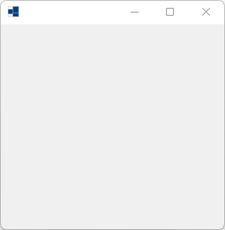
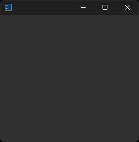
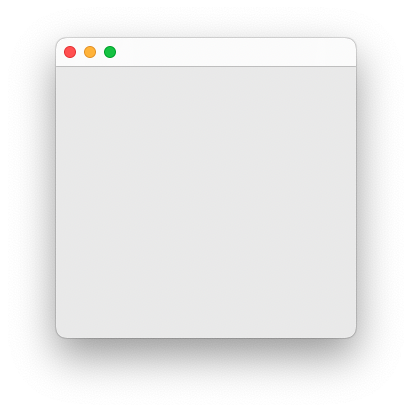
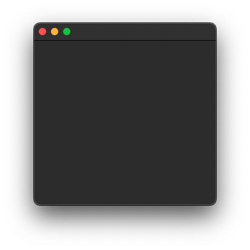
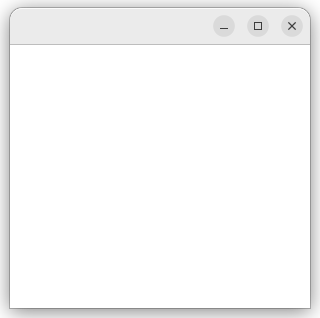
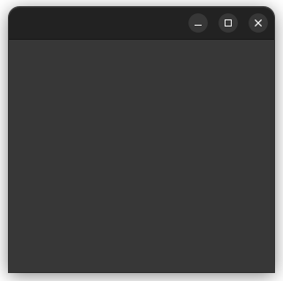

|
xtd
0.2.0
|
Loading...
Searching...
No Matches
application.cpp
Shows how to create an application with xtd::forms::application class.
- Windows
- 

- macOS
- 

- Gnome
- 

#include <xtd/forms/application>
#include <xtd/forms/form>
auto main()->int {
}
static void run()
Begins running a standard application message loop on the current thread, without a form.
Represents a window or dialog box that makes up an application's user interface.
Definition form.h:52
Generated on Sat Feb 24 2024 22:04:05 for xtd by Gammasoft. All rights reserved.